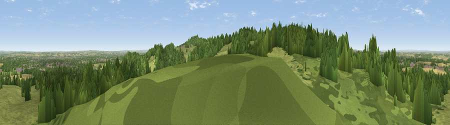

Viewpoint near Nanpantan
#11126 in England · top 9% of its area beats it · near NanpantanThe view, rendered

A 360° render of this exact spot computed from the terrain model, tree cover and land cover — summer colours, afternoon light, calibrated against photographs of famous viewpoints. Real trees, hedges and buildings will differ in detail.
The panorama
Grey silhouette: terrain skyline in each direction (720 bearings, Earth curvature and refraction included). Dashed green: skyline with trees (+15 m) and buildings (+8 m) as obstacles. Blue strip: how far the ground is visible on each bearing.
Where the view opens
Wedge length = distance to the farthest visible ground on that bearing (vegetation-aware). Rings at 10, 25 and 50 km.
What fills the view
48% woodland · 41% grassland · 7% cropland · 4% built-up ·
Angular shares of the visible panorama (visual magnitude), not map area. Landscape diversity 0.46 (0–1 Shannon).
Key numbers
More beautiful places nearby
The staircase of upgrades: each row has a higher view potential than everything closer. Driving times are estimates from straight-line distance, calibrated against real road routing — check an actual route before setting out.
| Place | Direction | Drive | Score |
|---|---|---|---|
| Ives Head | W · 2 km | ~6 min | 73.3 |
| Viewpoint near Woodhouse Eaves | SSE · 2 km | ~6 min | 77.7 |
| Viewpoint near Mow Cop | WNW · 76 km | ~100 min | 80.2 |
| Viewpoint near Little Wenlock | W · 87 km | ~111 min | 84.2 |
| The Wrekin | W · 87 km | ~112 min | 85.0 |
| Viewpoint near Little Wenlock | W · 88 km | ~112 min | 86.6 |
| North Hill | SW · 101 km | ~126 min | 86.8 |
| Worcestershire Beacon | SW · 102 km | ~127 min | 87.1 |
52.74764, -1.26036 · source: screening · position refined by local search. Computed location — check access rights before visiting.